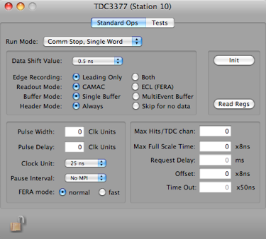
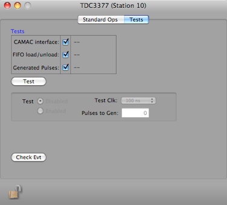

L3377 TDC



The 32 inputs are differential ECL, with a balanced 120 ohm termination. Either the leading edge or both leading and trailing edge may be recorded, with a double hit resolution of less than 10 nanoseconds. The number of edge measurements recorded per channel is programmable from 1 to 16.
The 3377 can be programmed to operate in either Common Start or Common Stop mode with either single or double data word output format.
The single word format packs 10 data bits (leading edge only, 9 bits if both edges are recorded) into a 16 bit word, for low dead time drift chamber applications. The programmable offset and resolution (500 ps to 4 nsec LSB) allow the time range (255 nanoseconds to 4 microsec- onds) to be placed as a window anywhere within the 32 microsecond full scale.
The double word format preserves the full 16 bit time data for wide dynamic range applications. The full scale time is programmable in 8 nsec steps up to 32.7 microseconds. The resolution is fixed at 500 picoseconds. Eight dECL trigger outputs are provided at the rear panel. For trigger purpose only, the input pulses are ORed together in groups of four (for example: output 1 is the or channels 0, 1, 2, 3). In Common Stop mode, the trigger outputs are programmable in width and delay, and can be latched at the Stop time. In Common Start mode, the triggers are latched.
The 3377 may be tested using an internal tester (Common Start mode only). The number of pulses and the pulse duration are programmable.
At the end of acquisition (Common Stop or Common Start time out) the data is unloaded from the MTD133s and stored in a multievent FIFO buffer. The dead time is 1.8 microseconds plus 100 nsec per recorded hit (200 nsec per hit when in double word mode).
For more information, please see the manual.
Run Mode for card
Dump all registers to the status log
Data Record
xxxx xxxx xxxx xxxx xxxx xxxx xxxx xxxx
^^^^ ^^^^ ^^^^ ^^-----------------------data id
^^ ^^^^ ^^^^ ^^^^ ^^^^-length in longs
xxxx xxxx xxxx xxxx xxxx xxxx xxxx xxxx
^--------------------------------1 = double word timestamp, 0 = single word timestamp (that was bogus coding)
^ ^^^---------------------------crate
^ ^^^^---------------------card
^^^^ ^^^^ ^^^^ ^^^^-numDataWords (16 bit), see below
xxxx xxxx xxxx xxxx xxxx xxxx xxxx xxxx
^^^^ ^^^^ ^^^^ ^^^^ ^^^^ ^^^^ ^^^^ ^^^^-reference date (high part of double)
xxxx xxxx xxxx xxxx xxxx xxxx xxxx xxxx
^^^^ ^^^^ ^^^^ ^^^^ ^^^^ ^^^^ ^^^^ ^^^^-reference date (low part of double)
The rest of the record consists of a 16 bit Header Word followed by
numDataWords data words:
1xxx xxxx xxxx xxxx Header Word (highest bit set)
^------------------0=short word format, 1=double word format
^-------------0=leading edge only, 1=leading and trailing edge
if single word format and leading edge only:
0xxx xxxx xxxx xxxx Data Word (highest bit NOT set)
^^^ ^^-------------channel
^^ ^^^^ ^^^^-data value
if single word format and leading and trailing edge
0xxx xxxx xxxx xxxx Data Word (highest bit NOT set)
^^^ ^^-------------channel
^------------0=leading edge, 1=trailing edge
^ ^^^^ ^^^^-data value
if double word format
0xxx xxx1 xxxx xxxx 1st Data Word (highest bit NOT set, 9th bit set)
^^^ ^^-------------channel
^------------0=leading edge, 1=trailing edge
^-----------0=second word, 1=first word
^^^^ ^^^^-high part
0xxx xxx0 xxxx xxxx 2nd Data Word (highest bit NOT set, 9th bit NOT set)
^^^ ^^-------------channel
^------------0=leading edge, 1=trailing edge
^-----------0=second word, 1=first word
^^^^ ^^^^-low part
Read out options
Timing setup
Enable channels, set time delays, and label channels
Write all values to hardware, prepare for run.
Simple tests to verify that the card is working properly